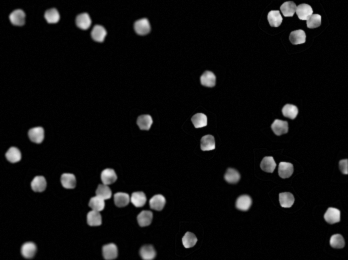
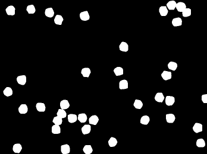

Broad Bioimage Benchmark Collection
Annotated biological image sets for testing and validation
Synthetic cells
Accession number BBBC005 · Version 1
Example images
-
In focus
-
Out of focus
-
True foreground
Biological application
Since robust foreground/background separation and segmentation of cellular objects (i.e.,identification of which pixels below to which objects) strongly depends on image quality, focus artifacts are detrimental to data quality. This image set provides examples of in- and out-of-focus synthetic images, which can be used for validation of focus metrics.
Images
Simulated HCS images were generated with the SIMCEP simulating platform for fluorescent cell population images (Lehmussola et al., IEEE T. Med. Imaging, 2007 and Lehmussola et al., P. IEEE, 2008). These images were simulated for a given cell count with a clustering probability of 25% and a CCD noise variance of 0.0001. Focus blur was simulated by applying Gaussian filters to the images. Each image is 696 x 520 pixels in 8-bit TIF format, with the nuclei and cell areas were matched to the average nuclei and cell areas from the BBBC006 (Human U2OS cells (out of focus)) image set.
The image nomenclature was chosen to permit metadata to be organized in a plate layout. Each image follows the form
SIMCEPImages_well_Ccells_Fblur;_ssamples_wstain.TIFwhere the variables are as follows:
- well
- The standard 384-well plate format is used where the rows are named A-P and the columns 1- 24.
- cells
- The number of cells simulated in the image (1-100).
- blur
- The amount of focus blur applied (1-48). The focus blur was simulated by using MATLAB's imfilter function with a rotationally symmetric Gaussian lowpass filter of diameter <#2> and sigma of 0.25 × <#2>
- sample
- Number of samples (1-25) for a given combination of <#1> and <#2>. Can be used to mimic the "site" number for each well.
- stain
- 1 = cell body stain, 2 = nuclei stain.
There are 19,200 image files.
BBBC005_v1_images.zip (1.8 GB)
Ground truth C F
| Nucleus counts for each of the 9600 fields of view | Citation |
|---|---|
| BBBC005_results_bray.csv (2.4 MB) | Bray et al., J. Biomol Screen, 2011 |
Recommended citation
"We used the image set BBBC005v1 from the Broad Bioimage Benchmark Collection [Ljosa et al., Nature Methods, 2012]."
Copyright

To the extent possible under law,
Anne Carpenter
has waived all copyright and related or neighboring rights to
blurred synthetic images and ground truth. This work is published from:
United States.